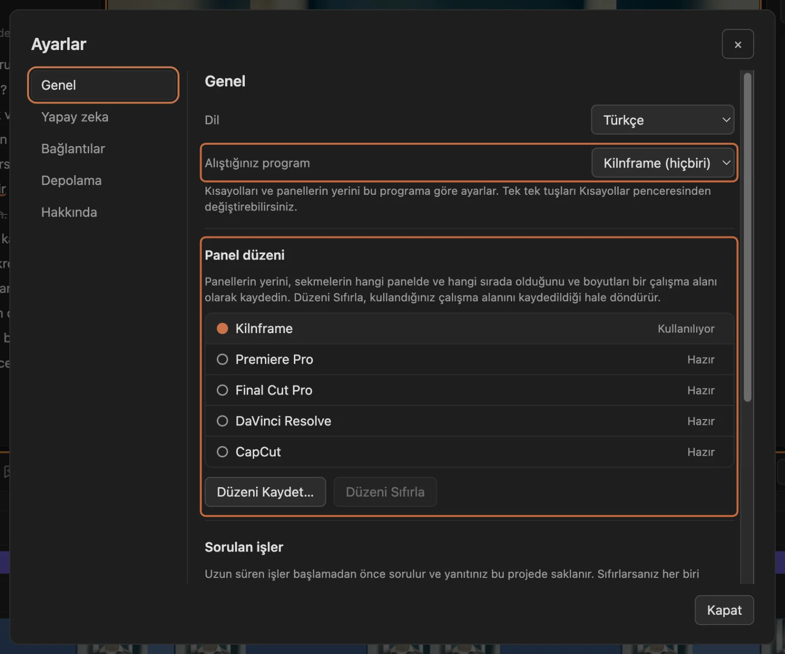
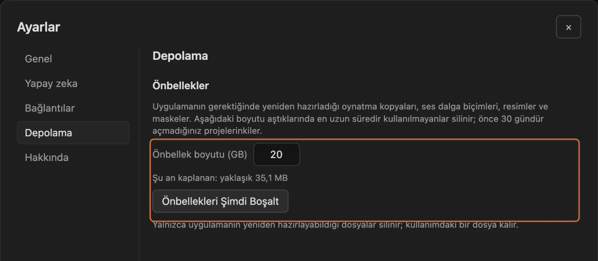
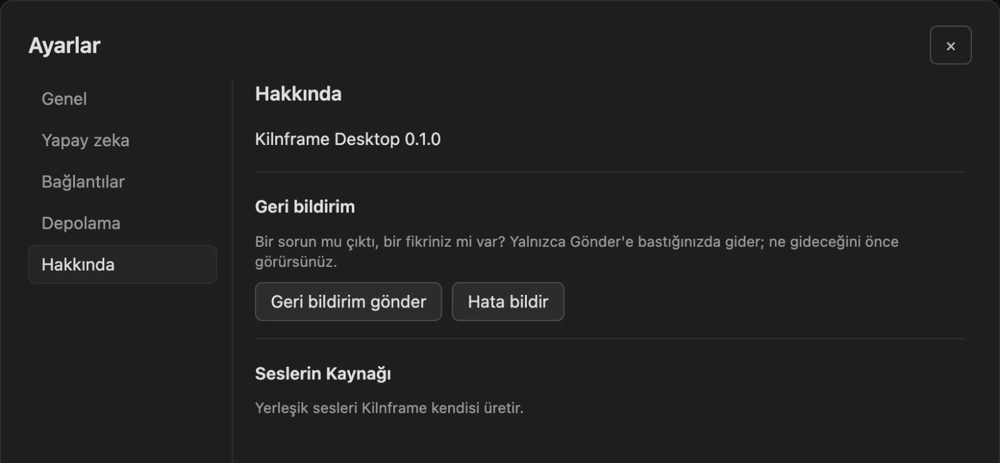

Ayarlar
Üst çubuktaki Ayarlar'ın (⌘ ,) beş sekmesi var.
Genel
- Dil: Türkçe, İngilizce ya da Otomatik (sistem).
- Alıştığınız program: Premiere Pro, Final Cut Pro, DaVinci Resolve ya da CapCut'ın panelleri ve tuşları (Editör penceresi).
- Panel düzeni: çalışma alanların, Düzeni Kaydet… ve Düzeni Sıfırla.
- Sorulan işler: Sorulan İşlerin Yanıtlarını Sıfırla (Süren işler ve sorulan işler).
- Tur: Turu Yeniden Başlat ve Örnek Projeyi Aç.
- Güncellemeler: sürümün ve Güncellemeleri denetle (Güncellemeler).

Yapay zeka
- Yapay Zeka Modeli: sağlayıcı ve model (Claude ya da ChatGPT aboneliği, API anahtarları, Yerel modeller).
- Animasyonlar: Kareleri göstermeden doğrudan çiz (Animasyonlar).
- Transkript: bu bilgisayarda ya da bulutta (Bulutta transkript).
- Diğer anahtarlar: Seslendirme ve Müzik (Gemini), OpenAI (Transkript) ve ElevenLabs; Fazla Sesleri Bul ile.
Bağlantılar
Yapay zeka asistanlarını bağla (MCP) (Yapay zeka asistanlarını bağla).
Depolama
Önbellekler: uygulamanın gerektiğinde yeniden yaptığı oynatma kopyaları, ses dalgaları, resimler ve maskeler. Önbellek boyutu (GB)'tan fazla yer kaplarlarsa en uzun süredir kullanılmayanlar, 30 gündür açılmayan projelerden başlayarak silinir. Şu an kaplanan ne kadar yer tuttuklarını gösterir; Önbellekleri Şimdi Boşalt yalnızca uygulamanın yeniden yapabileceği dosyaları siler.

Hakkında
Sürüm, Geri bildirim gönder ve Hata bildir (Hata bildir) ve Seslerin Kaynağı. Windows'ta ve Linux'ta bir Beta notu sorunların nereye bildirileceğini söyler.
